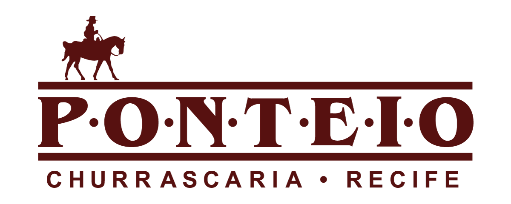
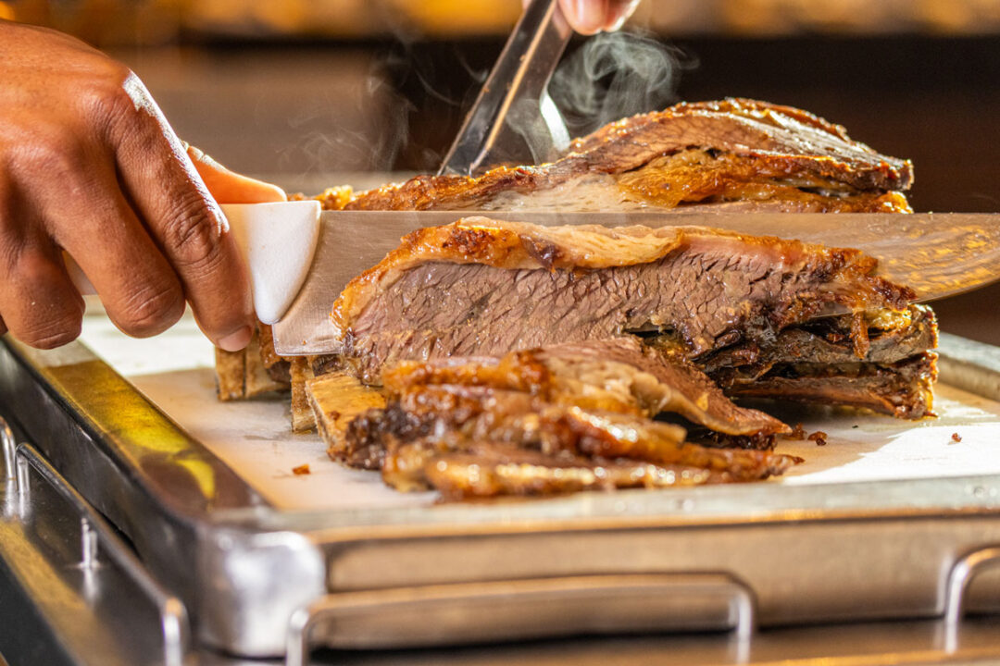
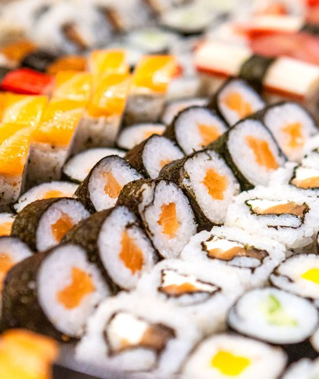

Clássico
InclusoPicanha
Corte nobre do rodízio, servido à mesa no ritmo da brasa.

Seleção de cortes bovinos nobres, cordeiro, porco, frango e peixe, preparados com cuidado e servidos à mesa.

A experiência começa na escolha dos cortes e segue na brasa, com serviço contínuo para a mesa.
Saladas, sushi, queijos, frios e pratos quentes da culinária de Pernambuco, incluindo camarão, baião de dois, moqueca e feijoada em dias especiais.

Sob o mural de João Andrade, o buffet reúne entradas frias, saladas, sushi, queijos, pratos quentes e acompanhamentos.
Bar completo, coquetéis clássicos e autorais, carrinho de caipirinhas com frutas frescas e serviço à mesa.
A adega reúne mais de 100 rótulos do novo e velho mundo, entre brancos, tintos e espumantes.
Rótulos para acompanhar picanha, costela, cupim, cordeiro e cortes suínos.
Opções para peixes, frango, sushi, saladas e pratos mais leves do buffet.
Boa abertura para frios, queijos, entradas e celebrações.
Clássicos, itens regionais, bolos, tortas e carrinho de sobremesas com opções preparadas diariamente.
Boa Viagem, Recife - PE
Av. Visconde de Jequitinhonha, 138 - Boa Viagem, Recife - PE
(81) 3125-3009
@ponteiorecife
A definir